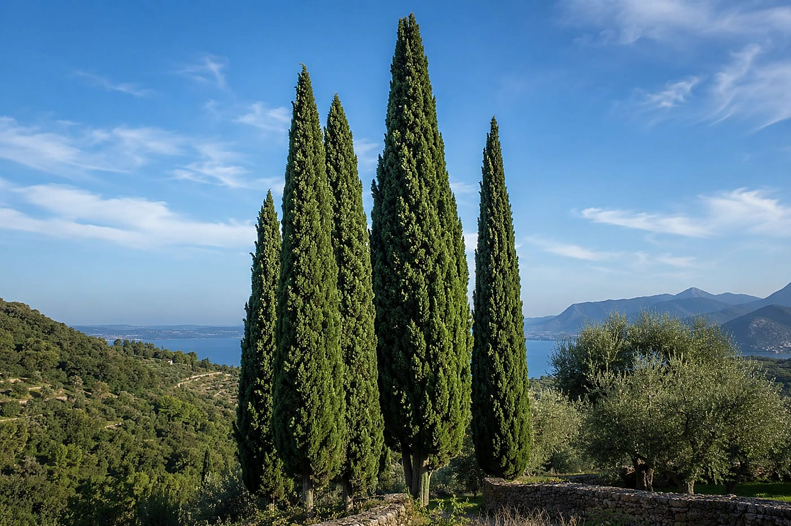
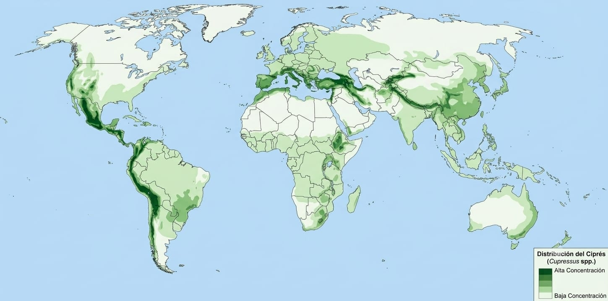
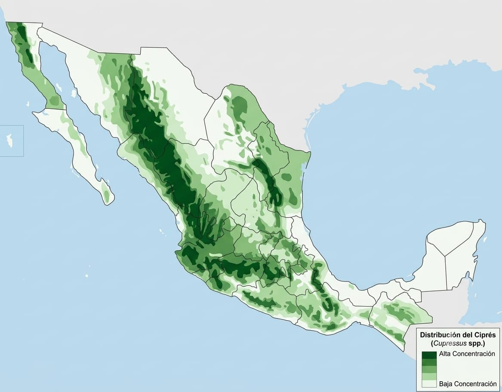

Fresno
Leer más sobre el ciprés
Prefiere sol directo o mucha luz. Tolera climas templados a semisecos y algo de frío, pero sufre en suelos encharcados o sombra permanente. En ciudades de México se ve en avenidas, camellones y predios porque aguanta polvo y poda moderada mejor que muchos árboles de sombra.
En los primeros años conviene riego regular sin encharcar. Después tolera mejor la sequía si el drenaje es bueno. Evita compactar el suelo junto al tronco y deja un espacio libre (sin concreto hasta el pie del árbol). El exceso de agua y el mal drenaje suelen hacer más daño que un periodo seco moderado.
Porte vertical o columnar, follaje de escamas pequeñas (no agujas largas como muchos pinos) y color verde oscuro persistente todo el año. No sustituye una identificación botánica formal: otras coníferas pueden parecerse en foto o de lejos.
Follaje que se pone café o amarillo en manchas, pérdida fuerte de ramillas, heridas grandes en el tronco, hongos visibles o suelo siempre saturado. MiBiCUBE orienta la observación; un técnico o extensión forestal/agrícola puede confirmar en campo si el problema es grave.
Se usa como ornamento, alineación en caminos y cortina rompevientos en zonas rurales. Su silueta estrecha ocupa poco ancho en banquetas. No es un árbol “de sombra amplia”: su valor es el porte, la persistencia del follaje y la resistencia relativa en sitios secos bien drenados.
📖 Saber más
Toca el mazo y elige una carta para conocer un aspecto específico del ciprés.
1/5

Nombre y
origen
origen
Nombre
Especies de Cupressaceae y etimología.
2/5

Conos y
reproducción
reproducción
Conos
Gimnospermas: polen, semillas y viento.
3/5

Raíces y
crecimiento
crecimiento
Raíces
Anclaje profundo y ritmo de crecimiento.
4/5

Resina y
madera
madera
Resina
Exudados, aroma y usos de la madera.
5/5

Simbolismo e
historia
historia
Símbolo
Paisaje, memoria y uso ornamental.
🌎 Distribución geográfica
Elige una zona para explorarla. Puedes acercar con +/− o pellizcar. La distribución exacta cambia según la especie.
Distribución mundial
Elige una zona para explorarla

Pellizca o usa +/− · toca una zona
Distribución en México
Explora regiones donde es frecuente

La presencia varía según la especie y el clima local